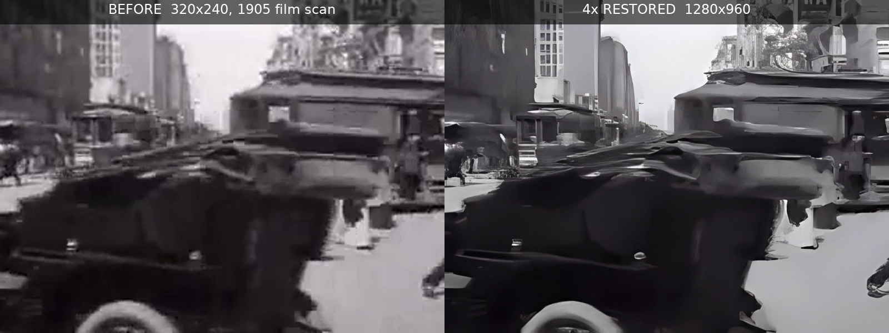
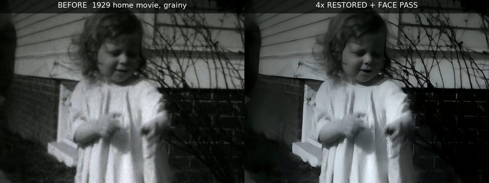

VHS tapes, camcorder files, old phone footage, DVD rips — send us the grainy original, get back a 4× upscaled, denoised, deinterlaced version with audio intact. Processed on private hardware in the EU. Your memories never touch a public API.


Demo footage: public domain (Prelinger Archives, archive.org). Every delivery includes before/after proof frames like these.
Up to 1 minute · 4× upscale · AI denoise · before/after proof · 72h delivery
Up to 5 minutes · everything in Basic · deinterlacing · 3 proof frames · 48h delivery · 2 revisions
Up to 30 minutes · face-enhancement pass for people-focused footage · per-scene proof · 3 revisions
Rush +50% · extra footage +$90/5 min · commercial license available on request.
4× the source resolution: 480p → 1920p, 720p → ≈2.9K. Perfect for family archives, e-commerce reels, and any clip outgrown by modern screens.
We recover detail, noise and softness from what exists in the file. Truly lost frames are limited — after a free preview we'll tell you honestly what's recoverable.
On our own private hardware in the EU. No third-party APIs, no US cloud. We can confirm deletion of your source file after delivery.
Real-ESRGAN (x4) for the general-purpose 4× upscale + denoise, yadif for VHS/DVD deinterlacing, and CodeFormer as a face-dedicated enhancement pass on the Premium tier. All run on our own NVIDIA RTX GPUs — batch-processed per job, fast for SD sources (~realtime).
A cloud link to the original file and anything you specifically want preserved (a scene, on-screen text, a color look).
Send us your clip. Free 10-second preview before you pay.
Start a restoration